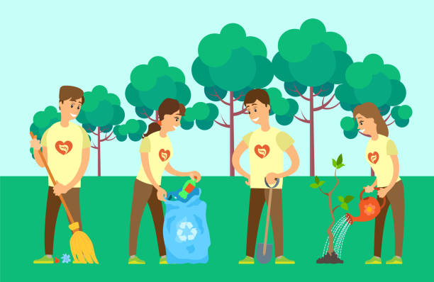

Website ini berisi informasi mengenai lingkungan dan bagaimana kita dapat menjaga kelestariannya.
Lingkungan adalah segala sesuatu yang ada di sekitar kita, baik yang hidup maupun yang tidak hidup. Lingkungan sangat penting bagi kehidupan manusia dan makhluk hidup lainnya.
Kerusakan lingkungan dapat menyebabkan berbagai dampak negatif, seperti perubahan iklim, bencana alam, dan kesehatan yang buruk.
Ada banyak cara yang dapat dilakukan untuk menjaga lingkungan, seperti mengurangi penggunaan plastik, menanam pohon, dan menghemat energi.